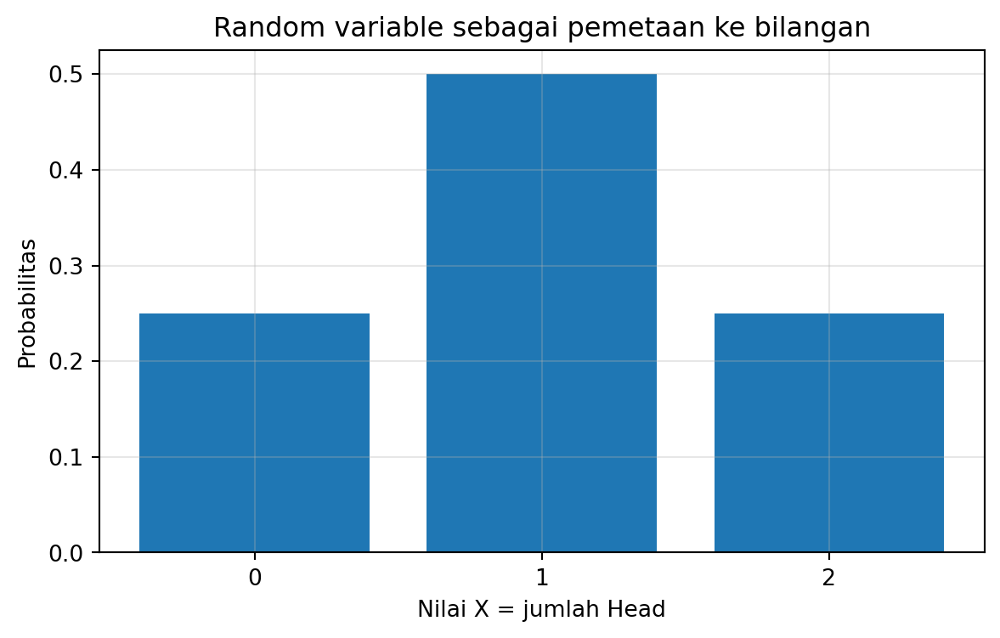
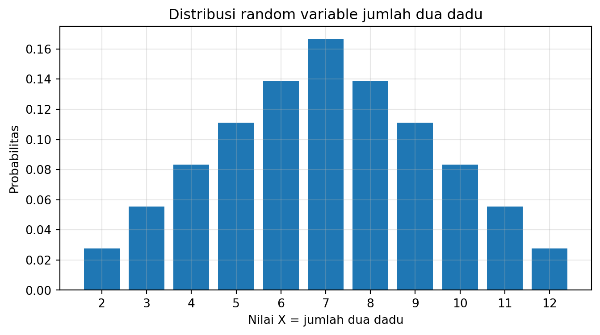
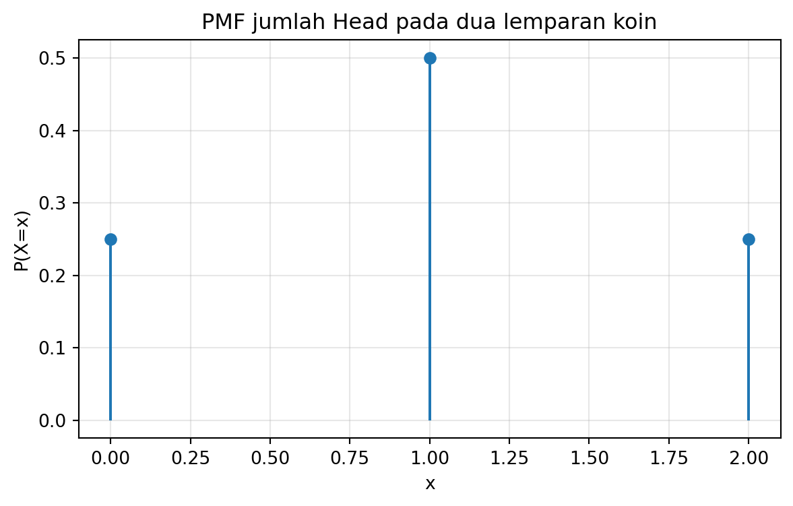
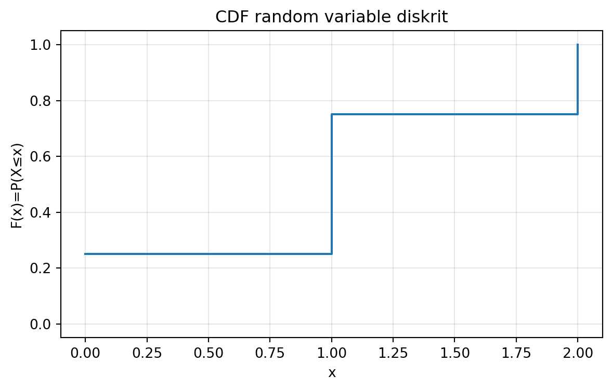
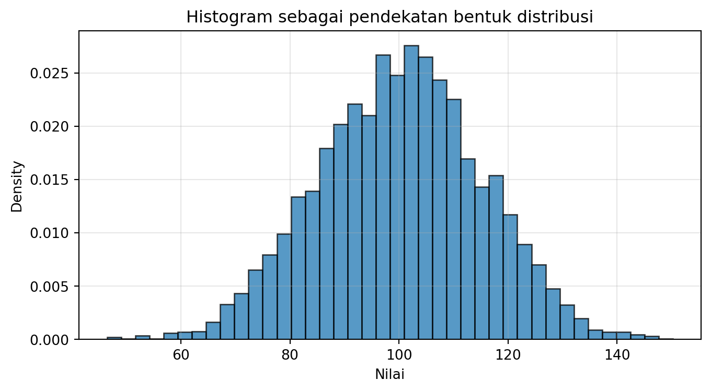
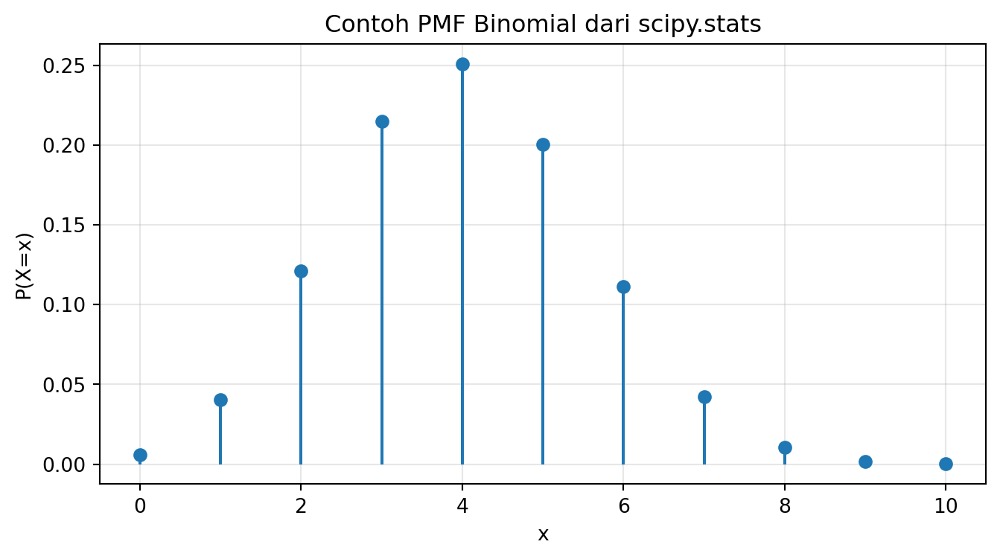

Setelah mempelajari bab ini, mahasiswa diharapkan mampu:
memahami random variable sebagai pemetaan dari hasil acak ke bilangan,
membedakan event dengan nilai random variable,
memahami range sebagai himpunan nilai yang mungkin,
membedakan random variable diskrit dan kontinu,
memahami dan menggunakan PMF, CDF, dan PDF,
menghitung dan menafsirkan ekspektasi, varians, dan simpangan baku,
menghubungkan ukuran-ukuran tersebut dengan pengambilan keputusan.
4.2 Pembuka
Pada bab sebelumnya, kita sudah melihat bahwa probabilitas menjadi penting ketika kita harus mengambil keputusan di bawah ketidakpastian. Kita juga sudah melihat bahwa salah satu cara paling kuat untuk “menjinakkan” ketidakpastian adalah dengan membuat model.
Di bab ini, kita masuk ke fondasi model tersebut: random variable.
Random variable adalah salah satu ide yang tampak sederhana, tetapi pengaruhnya sangat besar. Begitu kita berhasil memetakan hasil-hasil acak menjadi angka, kita memperoleh akses ke dunia matematika: kita bisa menggambar, menghitung, mensimulasikan, membandingkan, dan akhirnya memutuskan.
4.3 2.1 Quick Win: Dari Dunia Acak ke Garis Bilangan
Mari mulai dari contoh sederhana. Misalkan kita melempar dua koin. Ruang sampelnya adalah:
Artinya, hasil-hasil acak yang tadinya berupa simbol \(HH, HT, TH, TT\) dipetakan menjadi angka \(0,1,2\).
Mari lihat dengan Python.
import itertoolsimport numpy as npimport matplotlib.pyplot as pltoutcomes =list(itertools.product(['H', 'T'], repeat=2))def X(outcome):return outcome.count('H')mapped = [(o, X(o)) for o in outcomes]mapped
values = [X(o) for o in outcomes]unique, counts = np.unique(values, return_counts=True)plt.figure(figsize=(7,4))plt.bar(unique, counts / counts.sum())plt.xlabel("Nilai X = jumlah Head")plt.ylabel("Probabilitas")plt.title("Random variable sebagai pemetaan ke bilangan")plt.xticks(unique)plt.grid(alpha=0.3)plt.show()

Dari sini kita melihat quick win yang penting: - event hidup di ruang sampel, - random variable memetakan event ke angka, - distribusi random variable memberi tahu kita bagaimana peluang tersebar pada angka-angka itu.
4.4 2.2 K — Konteks: Mengapa Kita Perlu Random Variable?
Bayangkan beberapa pertanyaan berikut: - Berapa jumlah kendaraan yang lewat gerbang tol dalam satu jam? - Berapa waktu tunggu pasien sampai dilayani? - Berapa profit harian sebuah klinik? - Berapa banyak produk cacat dalam 100 unit? - Berapa lama sebuah lampu bertahan sebelum rusak?
Semua pertanyaan ini punya satu pola: hasilnya tidak pasti, tetapi hasil itu berupa bilangan.
Itulah alasan random variable menjadi penting. Ia menjadi jembatan antara: - kejadian acak di dunia nyata, dan - analisis matematis berbasis angka.
4.5 2.3 M — Model: Definisi Random Variable
Secara formal, random variable \(X\) adalah sebuah fungsi yang memetakan setiap hasil \(\omega\) dalam ruang sampel \(S\) ke sebuah bilangan real:
\[
X: S \to \mathbb{R}
\]
dengan
\[
\omega \mapsto X(\omega)
\]
Di sini: - \(S\) = ruang sampel, - \(\omega\) = satu hasil acak, - \(X(\omega)\) = angka yang dihasilkan oleh pemetaan itu.
4.5.1 Catatan penting
Random variable bukan “angka yang acak” dalam arti longgar. Secara matematis, random variable adalah fungsi. Keacakan datang dari kenyataan bahwa hasil \(\omega\) belum diketahui sebelum eksperimen terjadi.
4.6 2.4 Event vs Nilai Random Variable
Mahasiswa sering bingung membedakan dua hal ini:
event = himpunan hasil dalam ruang sampel,
nilai random variable = angka hasil pemetaan.
Contoh: lempar dua dadu, lalu definisikan
\[
X = \text{jumlah mata dadu}
\]
Maka event: \[
E = \{(1,6), (2,5), (3,4), (4,3), (5,2), (6,1)\}
\]
adalah event “jumlah mata dadu = 7”.
Tetapi nilai random variable yang terkait adalah: \[
X = 7
\]
Jadi: - event adalah kumpulan outcome, - random variable adalah angka yang dihasilkan dari outcome itu.
Mari visualisasikan cepat.
outcomes =list(itertools.product(range(1, 7), repeat=2))sums = [sum(o) for o in outcomes]unique, counts = np.unique(sums, return_counts=True)probs = counts / counts.sum()plt.figure(figsize=(8,4))plt.bar(unique, probs)plt.xlabel("Nilai X = jumlah dua dadu")plt.ylabel("Probabilitas")plt.title("Distribusi random variable jumlah dua dadu")plt.xticks(unique)plt.grid(alpha=0.3)plt.show()

4.7 2.5 Range: Nilai-Nilai yang Mungkin
Range dari random variable adalah himpunan semua nilai yang mungkin diambil oleh random variable tersebut.
Untuk contoh dua dadu dengan: \[
X = \text{jumlah mata dadu}
\]
range-nya adalah: \[
\{2,3,4,\dots,12\}
\]
Range ini penting karena memberi tahu: - apa saja kemungkinan nilai, - apakah nilai-nilai itu diskrit atau kontinu, - bagaimana bentuk distribusinya.
4.7.1 Diskrit vs Kontinu
4.7.1.1 Random Variable Diskrit
Jika range terdiri dari titik-titik terpisah, misalnya: \[
\{0,1,2,3,\dots\}
\] maka random variable itu diskrit.
Contoh: - jumlah pelanggan datang, - jumlah cacat, - jumlah pesan masuk, - banyaknya Head.
4.7.1.2 Random Variable Kontinu
Jika range berupa interval pada garis bilangan, misalnya: \[
[0,\infty)
\] atau \[
(-\infty,\infty)
\] maka random variable itu kontinu.
Contoh: - waktu tunggu, - lama hidup komponen, - tinggi badan, - suhu.
4.8 2.6 PMF untuk Random Variable Diskrit
Jika \(X\) diskrit, maka distribusinya dapat dinyatakan dengan Probability Mass Function (PMF):
\[
p_X(x) = P(X=x)
\]
PMF memberi peluang bahwa random variable mengambil nilai tepat \(x\).
4.8.1 Sifat PMF
\[
p_X(x) \ge 0
\]
\[
\sum_x p_X(x) = 1
\]
4.8.1.1 Contoh: jumlah Head pada dua lemparan koin
x = np.array([0, 1, 2])pmf = np.array([1/4, 1/2, 1/4])plt.figure(figsize=(7,4))plt.stem(x, pmf, basefmt=" ")plt.xlabel("x")plt.ylabel("P(X=x)")plt.title("PMF jumlah Head pada dua lemparan koin")plt.grid(alpha=0.3)plt.show()

4.8.1.2 Interpretasi keputusan
PMF membantu menjawab pertanyaan seperti: - seberapa mungkin tepat 2 cacat? - seberapa mungkin tepat 5 pelanggan datang? - seberapa mungkin tepat 1 dari 3 server gagal?
4.9 2.7 CDF: Bahasa Probabilitas Kumulatif
Baik untuk random variable diskrit maupun kontinu, salah satu fungsi terpenting adalah Cumulative Distribution Function (CDF):
\[
F_X(x) = P(X \le x)
\]
CDF memberi peluang bahwa nilai random variable tidak melebihi\(x\).
Ini sangat penting karena banyak keputusan berbentuk: - peluang rusak sebelum waktu tertentu, - peluang demand tidak melebihi stok, - peluang profit lebih kecil dari nol, - peluang nilai ujian di bawah batas lulus.
4.9.0.1 Contoh CDF diskrit
Untuk \(X\) = jumlah Head pada dua lemparan koin: - \(F(0)=P(X\le 0)=1/4\) - \(F(1)=P(X\le 1)=3/4\) - \(F(2)=1\)
cdf = np.cumsum(pmf)plt.figure(figsize=(7,4))plt.step(x, cdf, where='post')plt.xlabel("x")plt.ylabel("F(x)=P(X≤x)")plt.title("CDF random variable diskrit")plt.ylim(-0.05, 1.05)plt.grid(alpha=0.3)plt.show()

4.10 2.8 PDF untuk Random Variable Kontinu
Untuk random variable kontinu, kita biasanya tidak berbicara tentang peluang tepat pada satu titik, karena:
\[
P(X=x)=0
\]
Sebagai gantinya, distribusi dijelaskan dengan Probability Density Function (PDF):
Jika kita hanya melihat mean, dua pilihan ini tampak setara. Tetapi jika kita juga melihat variance, kita sadar bahwa salah satu pilihan jauh lebih berisiko.
4.14 2.12 Sifat-Sifat Penting Ekspektasi dan Varians
4.14.1 Linearitas ekspektasi
Untuk konstanta \(a,b\): \[
E[aX+b] = aE[X]+b
\]
Ini sangat penting karena memungkinkan kita memindahkan model ke unit baru atau mengubah skala.
4.14.2 Varians terhadap transformasi linear
\[
\mathrm{Var}(aX+b)=a^2 \mathrm{Var}(X)
\]
Artinya: - menambah konstanta tidak mengubah variance, - mengalikan skala dengan \(a\) memperbesar variance sebesar \(a^2\).
E[X] ~ 4.998183498453758
E[Y] ~ 24.994550495361278 teori = 24.994550495361274
Var[X] ~ 4.001028098478324
Var[Y] ~ 36.00925288630492 teori = 36.009252886304914
4.15 2.13 Diskrit dan Kontinu dalam Praktik
Secara praktik, banyak data diukur secara diskrit: - berat badan dibulatkan ke 0.1 kg, - waktu dicatat dalam detik, - panjang dicatat dalam milimeter.
Tetapi secara model, kadang jauh lebih sederhana menganggap besaran itu kontinu. Ini bukan kesalahan, tetapi bentuk idealisasi yang membantu analisis.
4.15.1 Pedoman intuitif
Jika nilai alami berupa hitungan → cenderung diskrit
Jika nilai alami berupa pengukuran halus → sering dimodelkan kontinu
Contoh: - jumlah mobil → diskrit - waktu hidup lampu → kontinu - jumlah pasien → diskrit - suhu → kontinu
4.16 2.14 Dari Histogram ke Distribusi
Dalam kenyataan, kita sering tidak mulai dari rumus distribusi, tetapi dari data. Dari data, kita bisa membuat histogram untuk melihat bentuk penyebaran.
Mari contohkan data simulasi.
rng = np.random.default_rng(99)samples = rng.normal(loc=100, scale=15, size=5000)plt.figure(figsize=(8,4))plt.hist(samples, bins=40, density=True, alpha=0.75, edgecolor='black')plt.xlabel("Nilai")plt.ylabel("Density")plt.title("Histogram sebagai pendekatan bentuk distribusi")plt.grid(alpha=0.3)plt.show()

Histogram tidak otomatis menjadi PMF atau PDF yang eksak, tetapi histogram sangat berguna untuk: - menduga bentuk distribusi, - melihat pusat, - melihat penyebaran, - mendeteksi skewness atau outlier, - memilih model awal yang masuk akal.
4.17 2.15 KMQA Mini-Case 1 — Timbangan Berat Badan
4.17.1 K — Konteks
Sebuah timbangan digital menampilkan berat badan dalam satu angka desimal.
4.17.2 M — Model
Jika \(X\) adalah berat badan orang yang naik ke timbangan, maka \(X\) dapat dimodelkan sebagai random variable kontinu, walaupun tampilan akhirnya dibulatkan.
4.17.3 Q — Questions
Apa range masuk akalnya?
Apakah lebih masuk akal dipandang diskrit atau kontinu?
Ukuran apa yang penting: mean, variance, atau keduanya?
4.17.4 A — Apply
Jawabannya: - range teknis mungkin 0–999.9, tetapi range realistis jauh lebih sempit, - secara teori lebih nyaman dipandang kontinu, - mean memberi pusat berat populasi, - variance memberi seberapa beragam berat badan orang yang diukur.
4.18 2.16 KMQA Mini-Case 2 — Jumlah Kendaraan di Gerbang Tol
4.18.1 K — Konteks
Kita ingin memodelkan jumlah kendaraan yang lewat dalam satu jam.
4.18.2 M — Model
Jika \(X\) = jumlah kendaraan, maka \(X\) adalah random variable diskrit.
4.18.3 Q — Questions
Mengapa diskrit?
Apa range yang masuk akal?
Apa arti \(P(X=120)\)? Apa arti \(P(X\le 120)\)?
4.18.4 A — Apply
diskrit karena berupa hitungan,
\(P(X=120)\) adalah peluang tepat 120 kendaraan,
\(P(X\le 120)\) adalah peluang jumlah kendaraan tidak melebihi 120.
4.19 2.17 KMQA Mini-Case 3 — Waktu Tunggu Pasien
4.19.1 K — Konteks
Sebuah klinik ingin memodelkan waktu tunggu pasien hingga dilayani.
4.19.2 M — Model
Jika \(X\) = waktu tunggu (menit), maka \(X\) biasanya dimodelkan kontinu.
4.19.3 Q — Questions
Mengapa kontinu?
Mengapa \(P(X=10)=0\) tetapi \(P(9.5 \le X \le 10.5)\) bisa positif?
Mengapa CDF penting dalam konteks ini?
4.19.4 A — Apply
kontinu karena waktu dapat berubah halus,
pada model kontinu, peluang titik tunggal nol,
yang bermakna adalah peluang interval,
CDF membantu menjawab “peluang menunggu tidak lebih dari x menit”.
4.20 2.18 Python Toolbox Dasar untuk Bab Ini
Berikut beberapa alat Python yang sangat sering dipakai untuk random variable.
plt.figure(figsize=(8,4))plt.stem(x_discrete, pmf_binom, basefmt=" ")plt.title("Contoh PMF Binomial dari scipy.stats")plt.xlabel("x")plt.ylabel("P(X=x)")plt.grid(alpha=0.3)plt.show()

4.21 2.19 Kesalahan-Kesalahan Umum yang Harus Dihindari
Menganggap random variable sama dengan event
Tidak. Event adalah himpunan outcome. Random variable adalah fungsi ke bilangan.
Menganggap PDF adalah peluang langsung
Tidak. Untuk kontinu, peluang adalah luas area di bawah PDF.
Menganggap mean cukup untuk semua keputusan
Tidak. Variance dan bentuk distribusi juga penting.
Menganggap diskrit dan kontinu bisa dipertukarkan sembarangan
Tidak. Pemilihan model harus sesuai konteks.
Menganggap \(P(X=x)\) untuk kontinu bisa positif
Tidak. Dalam model kontinu, peluang tepat satu titik adalah nol.
4.22 2.20 Menyimpulkan Bab Ini
Bab ini memberi fondasi yang akan dipakai terus-menerus pada bab-bab berikutnya.
Kita telah melihat bahwa: - random variable adalah fungsi dari ruang sampel ke bilangan real, - range membantu kita mengenali jenis peubah acak, - PMF dipakai untuk diskrit, - PDF dipakai untuk kontinu, - CDF berlaku untuk keduanya, - ekspektasi memberi ukuran pusat, - varians dan simpangan baku memberi ukuran penyebaran.
Dengan fondasi ini, kita siap masuk ke distribusi-distribusi khusus yang sangat sering dipakai dalam pemodelan nyata.
4.23 2.21 Ringkasan Poin Inti
Random variable memetakan hasil acak menjadi angka.
Event berbeda dari nilai random variable.
Range adalah himpunan nilai yang mungkin diambil.
PMF untuk diskrit, PDF untuk kontinu, dan CDF untuk keduanya.
Ekspektasi mengukur pusat atau rata-rata jangka panjang.
Varians dan simpangan baku mengukur penyebaran.
Dalam keputusan nyata, kita hampir selalu perlu melihat lebih dari sekadar mean.
4.24 2.22 Latihan Bab 2
4.24.1 A. Konseptual
Jelaskan dengan kata-kata sendiri apa itu random variable.
Apa perbedaan antara event “jumlah mata dua dadu = 7” dan nilai random variable \(X=7\)?
Mengapa PDF bukan peluang langsung?
4.24.2 B. Hitungan
Untuk dua lemparan koin, hitung PMF dan CDF dari jumlah Head.
Untuk dua dadu fair, hitung:
\(P(X=8)\)
\(P(X\le 8)\) dengan \(X\) = jumlah dua dadu.
Jika \(X\) uniform pada [0,1], hitung:
\(P(X<0.3)\)
\(P(0.3 \le X \le 0.8)\)
4.24.3 C. Python
Simulasikan 50.000 lemparan dua koin dan bandingkan histogram hasil dengan PMF teoritis.
Simulasikan 50.000 lemparan dua dadu dan gambar CDF empiris jumlah mata dadu.
Simulasikan random variable kontinu sederhana dan tunjukkan bahwa peluang titik tunggal mendekati nol.
4.24.4 D. Aplikatif
Sebutkan satu random variable diskrit dan satu kontinu dari kehidupan sehari-hari.
Dalam konteks layanan klinik, ukuran mana yang lebih penting: mean waktu tunggu atau peluang menunggu lebih dari 30 menit? Jelaskan.
Dalam konteks quality control, mengapa \(P(X\le k)\) sering lebih berguna daripada hanya \(P(X=k)\)?
4.25 2.23 Penutup Kecil
Bab ini mungkin terlihat “dasar”, tetapi fondasi yang kuat justru dibuat dari konsep-konsep dasar yang dipahami dengan jernih. Begitu Anda benar-benar memahami random variable, PMF, CDF, PDF, ekspektasi, dan varians, banyak topik berikutnya akan terasa jauh lebih masuk akal.
Di bab berikutnya, kita akan mulai memasuki keluarga-keluarga distribusi diskrit khusus yang sangat sering dipakai dalam pemodelan: Bernoulli, Binomial, Geometric, Poisson, dan lainnya.